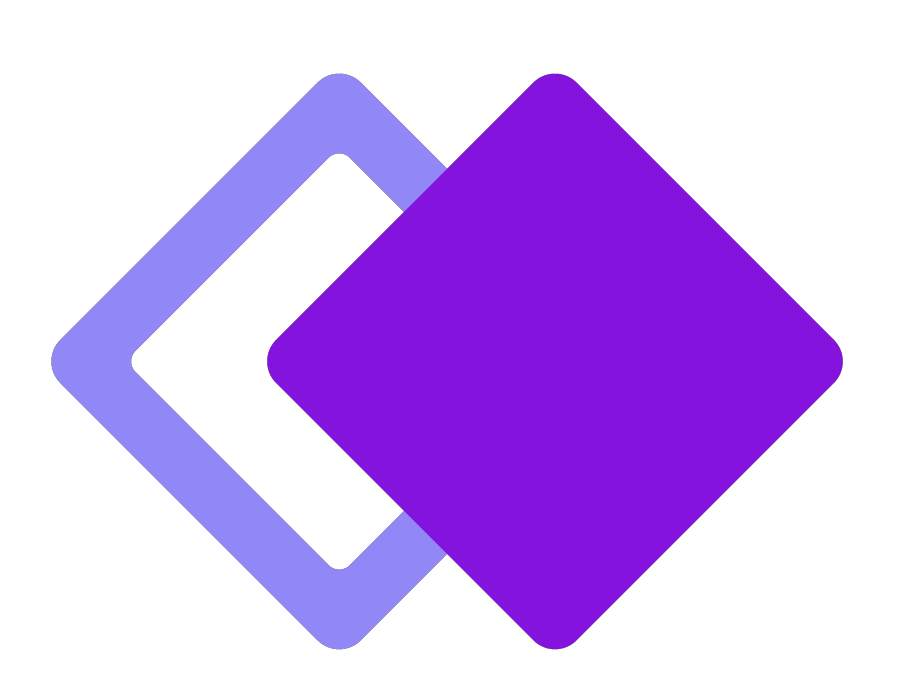

¿Qué es Whimsical?
Es un paquete de colaboración diseñado para ayudar a las empresas a crear documentos, wireframes, diagramas de
flujo o mapas mentales.
Herramienta Impulsada
por Inteligencia Artificial
Permite:
- Mejorar la ideación de un proyecto en un equipo u
organización con una interfaz intuitiva y ágil.
- Colaborar en vivo en tiempo real o trabajar de forma
asincrónica y comunicarte a través de comentarios y
conversaciones.
- Desarrollar mapas mentales a través de su IA.
- Recibir respuestas exhaustivas a través de consultas de los
usuarios a la IA.
A continuación se detalla el modo
de uso de esta herramienta